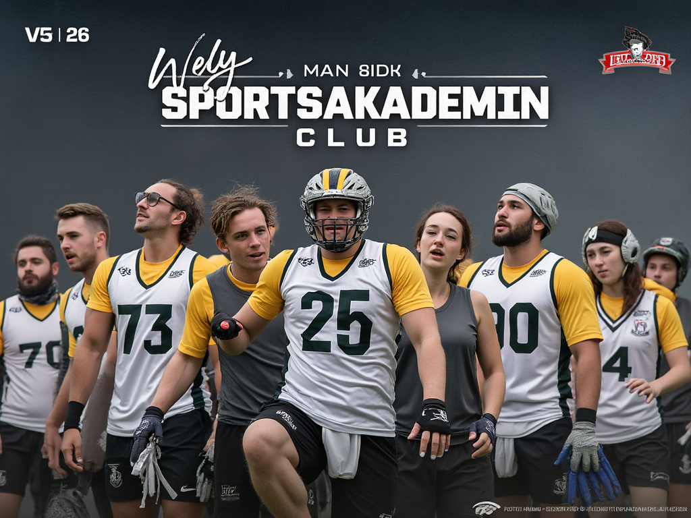
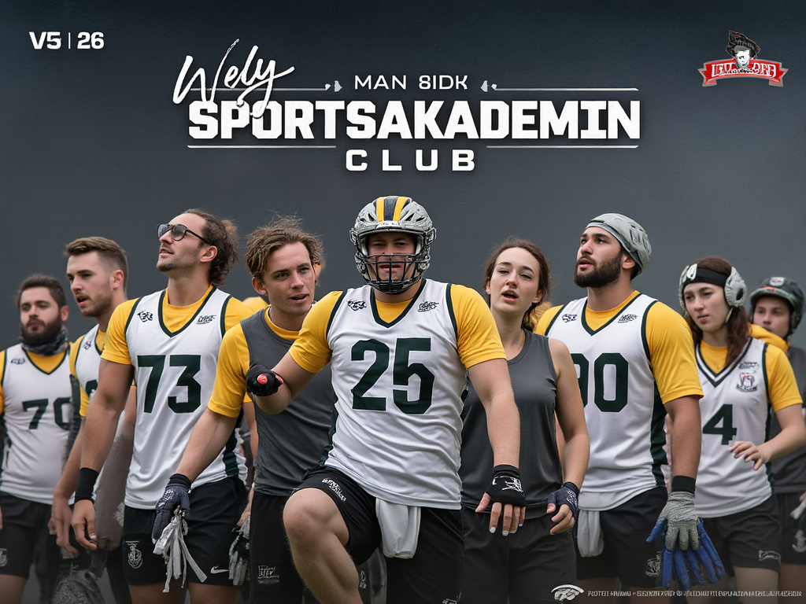

Välkommen till Sportsakademien – din hemmaarena för idrott och prestation!
Här på Sportsakademien är vi mer än bara en idrottsklubb; vi är en gemenskap av idrottsintresserade individer som strävar efter att utveckla sig själva och varandra, både på och utanför planen.
Vår Vision: Att skapa en miljö där alla, oavsett ålder eller skicklighetsnivå, kan upptäcka, utveckla och njuta av idrottens magi. Vi tror på kraften i rörelse, samarbete och gemenskap för att bygga starkare, friskare och mer engagerade individer.
Våra Aktiviteter:
Fotboll
Från ungdomsakademier till vuxenligor, vi erbjuder träningar och matcher för alla åldrar.
Basketboll
Intensiva träningspass och tävlingar som hjälper dig att förbättra din teknik och teamwork.
Volleyboll
Perfekt för de som älskar snabbhet och koordination, våra grupper är alltid öppna för nya medlemmar.
Yoga & Träning
För att komplettera din idrottsutövning, erbjuder vi yoga och styrketräningsprogram som hjälper dig att hålla balansen och förbättra din fysiska styrka.
Varför Sportsakademien?
Professionell Ledning
Våra tränare är certifierade och har erfarenhet från både nationella och internationella arenor.
Gemeenskap
Vi bygger inte bara atleter, vi bygger vänner och livslånga relationer.
Faciliteter
Modern, välutrustad anläggning med omklädningsrum, shower, gym och idrottshallar som möjliggör träning året runt.
Bli en Del av Oss
Oavsett om du är en nybörjare som vill prova på något nytt, eller en erfaren idrottare som söker utmaning och gemenskap, finns det en plats för dig här. Gå med oss på Sportsakademien och bli en del av en klubb som verkligen bryr sig om din utveckling och välmående.
Vi ser fram emot att välkomna dig till vår idrottsfamilj. Tillsammans når vi nya höjder!
Sportsakademien – Där idrott blir mer än bara en sport. 
